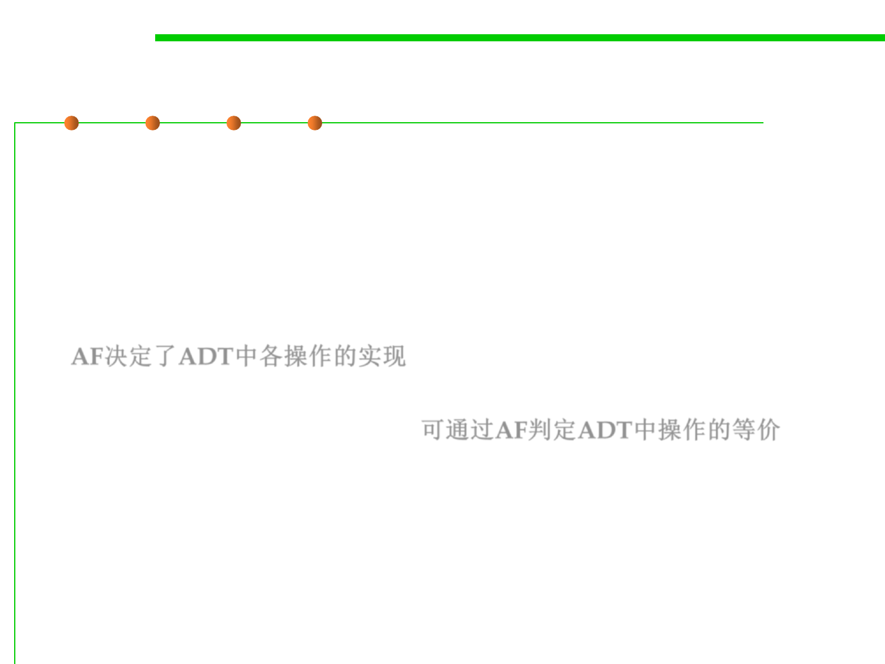

Equality operation on an ADT
3.5 Equality in ADT and OOP
▪ ADT is data abstraction by creating types that are characterized by
their operations, not by their representation.
▪ For an abstract data type, the abstraction function explains how to
interpret a concrete representation value as a value of the abstract
type, and we saw how the choice of abstraction function determines
how to write the code implementing each of the ADT’s operations.
AF决定了ADT中各操作的实现
▪ The abstraction function (AF) gives a way to cleanly define the
equality operation on an ADT. 可通过AF判定ADT中操作的等价